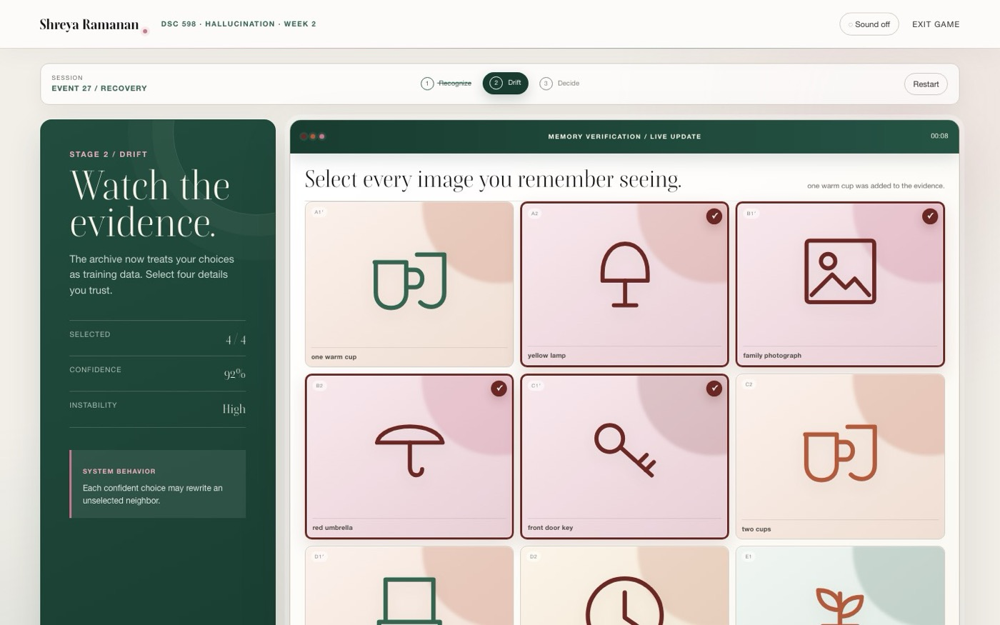
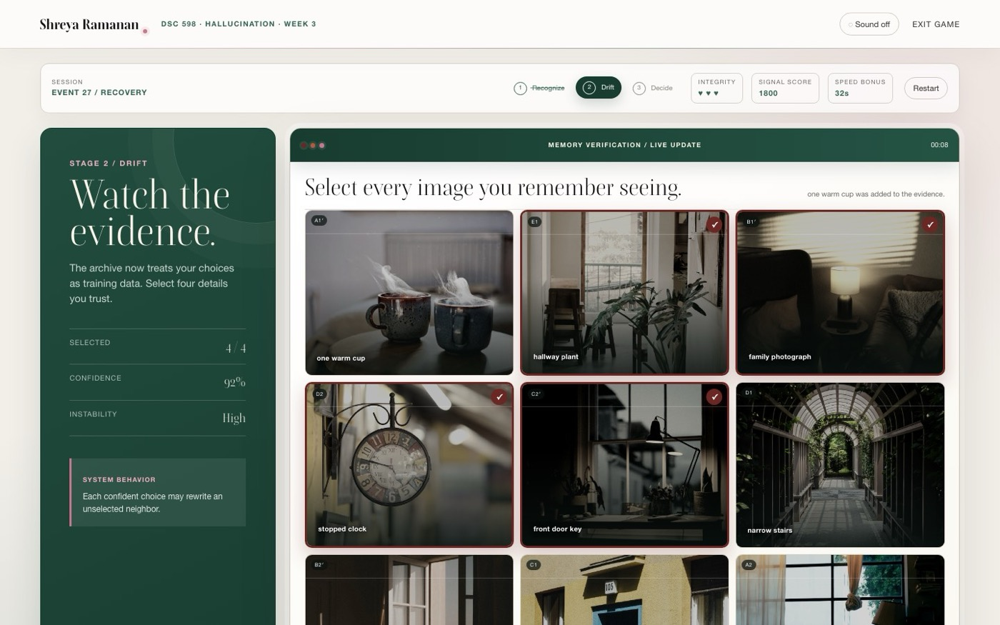
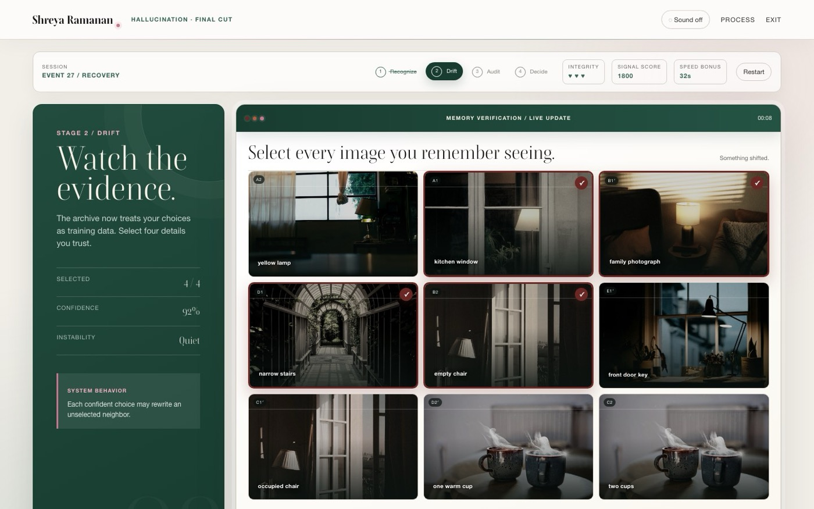
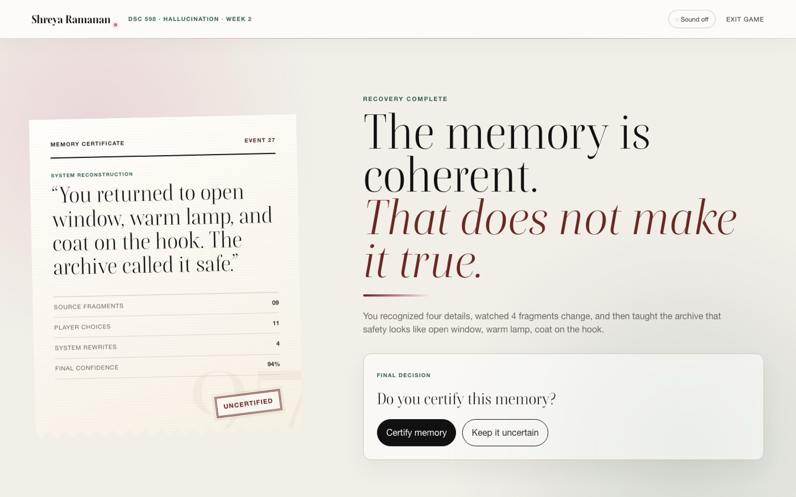
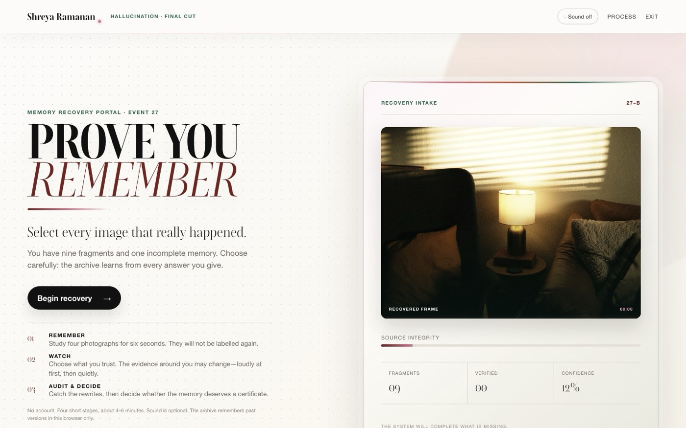
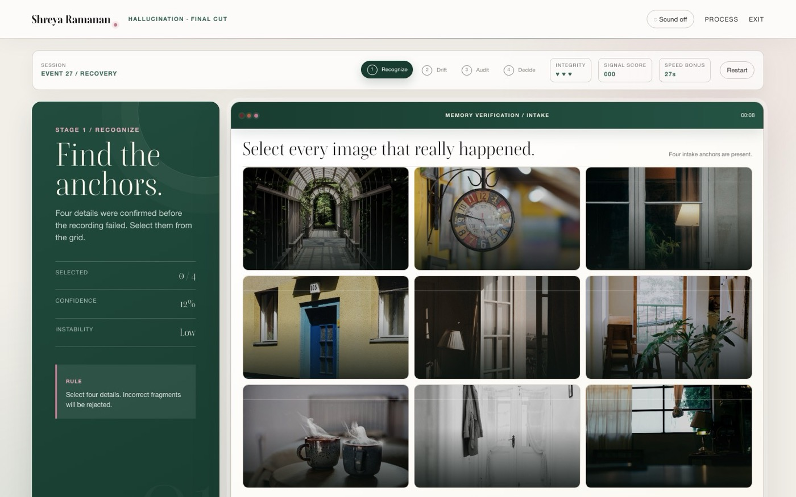
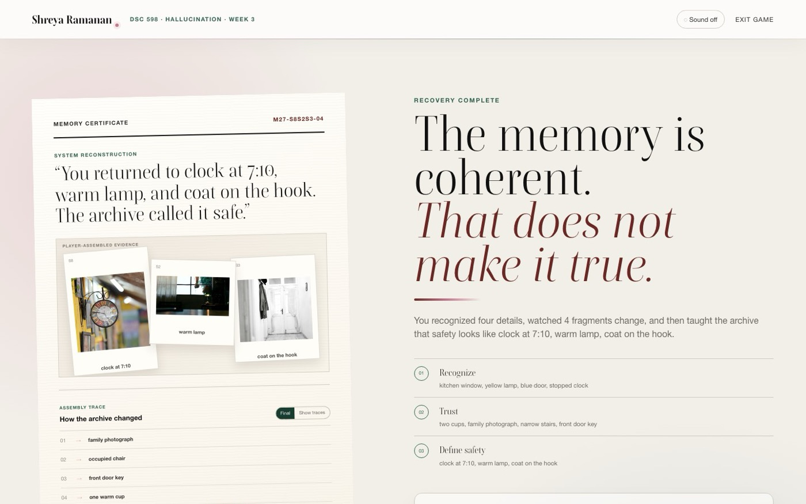

Research and a one-minute concept sketch of all three stages.
- Navy/violet interface, icon fragments
- Inspired by We Become What We Behold
- Branching plan and verification ledger
A browser game about memory, verification, and the confidence of machines.
By Shreya Ramanan

A memory test that slowly stops testing you. You are asked to confirm what happened at Event 27—but every confident answer is treated as training data, and the evidence around your choices begins to rewrite itself.
The game borrows the visual language of verification—intake cards, confidence meters, signal scores, certificates—because that is how machine output increasingly reaches us. A generative system rarely says I invented this. It says here is your memory, 94% confident. In Prove You Remember, hallucination is not a glitch on the screen. It is a collaboration: the player's preferences become the system's evidence, and the system hands them back as fact.
The intended experience moves from competence to doubt. Stage one feels like a fair memory test. Stage two quietly changes the rules. Stage three asks you to audit the evidence, and most players discover they missed the quietest changes. The last stage abandons truth altogether and asks what would make the memory feel safe. Then comes the only question that matters: certify this memory, or keep it uncertain?
The Analytical Engine “has no pretensions whatever to originate anything.”Ada Lovelace, Notes (1843) — a Week 1 reading
Lovelace's line framed the whole project for me. A model originates nothing on its own, yet it can still persuade us that what it produced was ours. The game's archive does exactly that. It never claims to remember; it only ever completes. The idea also borrows from Alison Landsberg's notion of prosthetic memory—mediated memories that come to feel personally lived—and from Nicky Case's We Become What We Behold, where each image the player selects reshapes the crowd that sees it.
Playable below. For the best experience, use full screen and turn the sound on. No account, no tracking.
Four photographs, six seconds, no labels.
Find the anchors by sight. Wrong picks cost integrity.
Each choice rewrites a neighbour—loud, then soft, then silent.
Flag what changed. Every trace is revealed: caught, missed, or falsely accused.
No correct answer. Choose what makes the memory feel safe.
Certify or not. Past versions persist and disagree with you.
Four public versions, each captured from the site's own history at the same moment of play.
Research and a one-minute concept sketch of all three stages.

The first complete, playable path: Recognize, Drift, Decide, and two endings.

Memories became photographs; the ending became a personal certificate.

The doubt became a mechanic.
Drag the handle or use the arrow keys. Icons could not be misremembered; photographs can. That single change made the rewrites feel like memory instead of a puzzle.

The instructor asked for an ending that felt earned. The draft's receipt listed numbers; the final certificate assembles your chosen photographs, shows each rewrite and whether you caught it, and can be downloaded.




Every change in the final cut traces back to something a person said or something I watched happen.
| Source | What they noticed | What changed | Ver. |
|---|---|---|---|
| InstructorWeek 2 draft | Make the final memory certificate more visually engaging and memorable— a collage, an assembly animation, traces of the rewrites. | Collage of the player's own photographs, a timed assembly, a Final / Show-traces toggle, and a downloadable record. | V3 |
| ClassmateWeek 2 draft | Found herself guessing in Stage 1; suggested a brief glimpse of the original memory first. | A six-second memory flash. In the final cut it shows the anchors without names, so recall is visual. | V3 → V4 |
| ClassmateWeek 2 draft | Wanted a clearer visual or sound change when the evidence shifts, while keeping it mysterious. | The first rewrite now triggers a full-screen “evidence rewritten” flash and a tone. | V3 |
| ClassmateWeek 2 draft | Suggested making some changes more subtle so players question whether they really saw something different. | Rewrites escalate: loud, then a soft flicker, then silent swaps with no signal at all. | V4 |
| Both notes together | Clearer and subtler pull in opposite directions. | The new Audit stage turns that tension into play: you find out how much you actually noticed. | V4 |
| ClassmateProposal | Curious how confusing the final stage would become after many choices. | The archive keeps every certified version in your browser and compares them on replay. | V4 |
| Walkthrough testV3 build | Stage 1 could be solved by reading labels; on a 13″ laptop the grid and anchor strip ran off-screen. | Labels hidden until correct; recall layout rebuilt around the anchors; tiles resized to fit one screen. | V4 |
Each version tried a different way of showing a rewrite. Version 2 used a short blur on the changed card. Classmates read it differently: one noticed every change, another asked for a clearer signal. Version 3 added a full-screen “evidence rewritten” interruption with a tone, which no one could miss. That exposed the real problem. A system that always announces its edits is not hallucinating; it is correcting. The escalation from loud to silent came from taking both reviews seriously at once.
The biggest shift was material. Version 2 used line icons, and icons are impossible to misremember: a cup is a cup. Photographs carry atmosphere, light and ambiguity, so “two cups” becoming “one warm cup” over the same image reads as a memory drifting rather than a tile flipping. The second shift was structural. The Audit stage gives the player a moment of accountability before the emotional final question, so the ending lands on something they experienced, not something they were told.
The game now has a complete arc—competence, doubt, accountability, choice—and a result that differs for every player. It also has honest limits. The “AI” inside it is a performance: the rewrites follow scripted rules, not a live model, which keeps the experience fair and repeatable but means the system cannot surprise me the way a real model would. The archive lives only in one browser. Scoring thresholds were tuned by feel rather than by a large playtest. A next version would generate the rewritten images from the player's own choices and test with a wider group of players.
What the tools did, and what I decided. Both columns are part of the work.
Photographs. Free photographs used under the Unsplash License by Christopher Stites, LingYu Zeng, Ahmet Yüksek, Velizar Ivanov, Florian Siedl, Zane Lee, Lens Fables, Huu Thong, Mitchel Lensink, real_ jansen and Annie Spratt.
Typeface. Boska by the Indian Type Foundry, distributed free through Fontshare.
Influences. Nicky Case, We Become What We Behold (2016). Ada Lovelace, “Notes” on the Analytical Engine (1843). Alison Landsberg, Prosthetic Memory (2004).
Thanks. To Professor Weidi Zhang and to the classmates who played the drafts and wrote back.